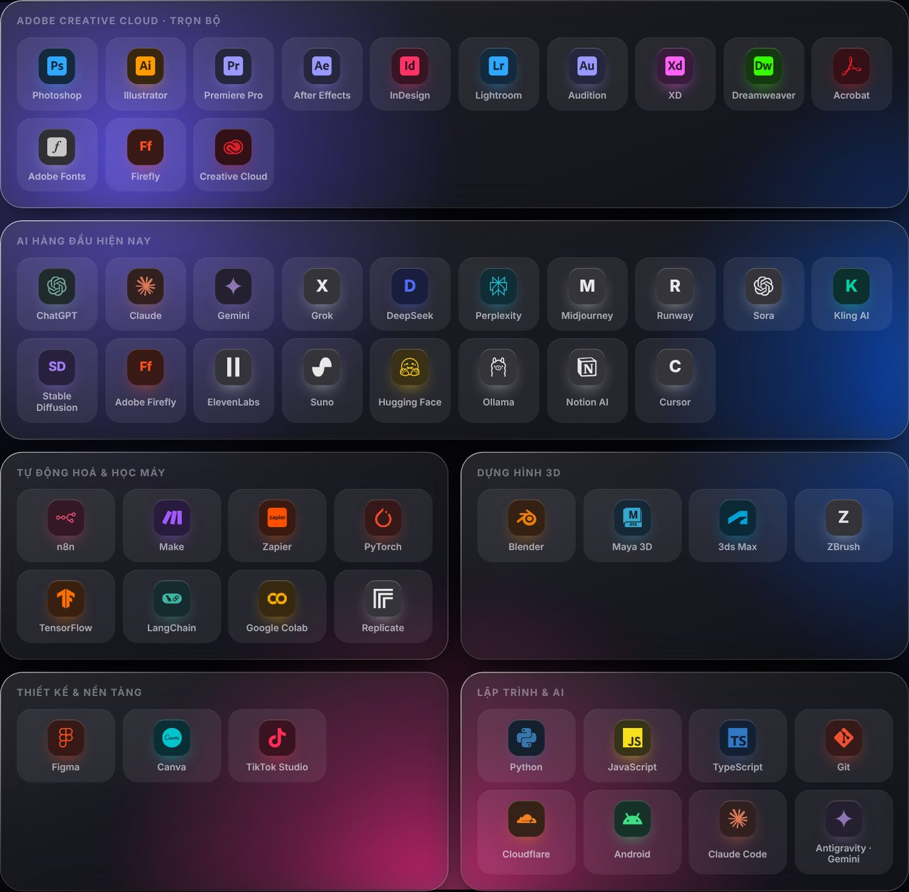
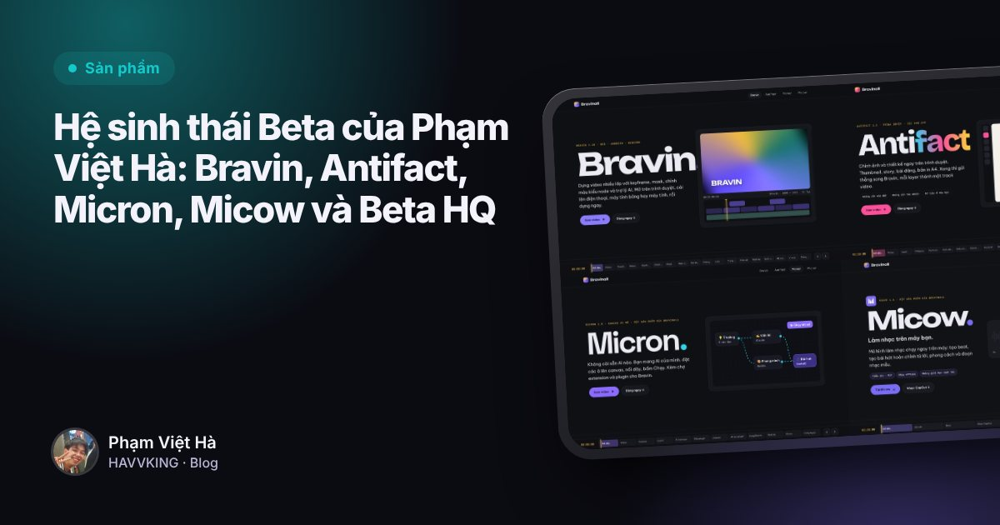

Phạm Việt Hà
Phạm Việt HàMục lục
Một người vừa thiết kế, dựng video, làm nhạc vừa xây sản phẩm AI thì dùng công cụ gì? Đây là bộ đồ nghề của Phạm Việt Hà, đi từ 2D, 3D, AI đến code.

Adobe Creative Cloud: trọn bộ
| Việc | Công cụ |
|---|---|
| Ảnh, thiết kế | Photoshop, Illustrator, Lightroom, InDesign, XD |
| Video | Premiere Pro, After Effects |
| Âm thanh | Audition |
| Web, tài liệu | Dreamweaver, Acrobat |
| Phông, AI tạo ảnh | Adobe Fonts, Firefly |
Premiere Pro và After Effects là hai công cụ gắn với sáu năm làm Video Grapher & Editor. Nhiều thao tác quen thuộc từ đó, như Ripple, Roll, Slip, Slide và Effect Controls, sau này có mặt trong Bravin.
Dựng hình 3D
Blender, Maya, 3ds Max và ZBrush. Nền tảng dựng hình bắt đầu từ chương trình Mỹ thuật đa phương tiện ở Arena Multimedia.
AI hàng đầu hiện nay
- Chữ, lập trình: ChatGPT, Claude, Gemini, Grok, DeepSeek, Perplexity, Notion AI, Cursor.
- Ảnh, video: Midjourney, Runway, Sora, Kling AI, Stable Diffusion, Adobe Firefly.
- Giọng nói, nhạc: ElevenLabs, Suno.
- Mô hình mở, chạy trên máy: Hugging Face, Ollama.
Để nối nhiều AI khác nhau thành một quy trình, mỗi ô một AI, Phạm Việt Hà xây Micron.
Tự động hoá và học máy
n8n, Make, Zapier cho tự động hoá. PyTorch, TensorFlow, LangChain, Google Colab, Replicate cho học máy. Đây là phần nối thẳng với học vấn AI và mô hình làm nhạc Micow.
Thiết kế và nền tảng
Figma cho thiết kế giao diện, Canva cho đồ hoạ nhanh, TikTok Studio cho các kênh TikTok.
Lập trình
Python, JavaScript, TypeScript, Git, Cloudflare (các sản phẩm Beta chạy trên Cloudflare Workers), Android, Claude Code và Antigravity (Gemini). Các sản phẩm Beta được xây cùng tác nhân AI, và mỗi bản phát hành đều qua kiểm thử.
Công cụ tự xây
Cuối cùng là những công cụ Phạm Việt Hà tự xây:

Đọc thêmHệ sinh thái Beta của Phạm Việt Hà: Bravin, Antifact, Micron, Micow và Beta HQ